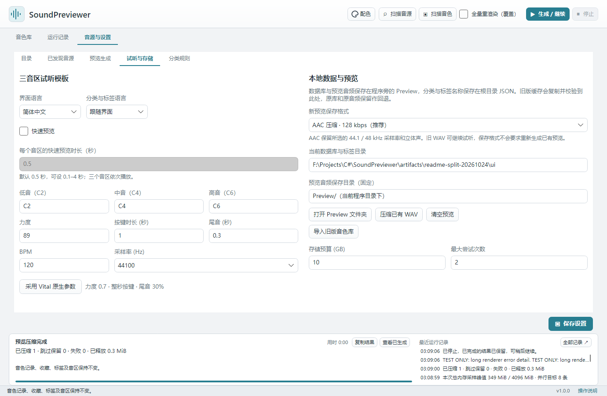
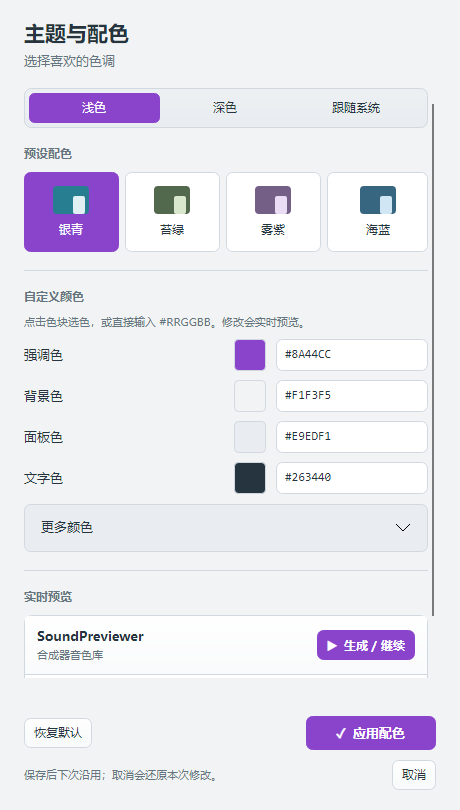

语言与外观
本页内容：
界面语言与元数据语言
在「音源与设置 → 试听与存储」选择「界面语言」与「分类与标签语言」。后者可以跟随界面，也可单独指定。切换立即生效并保存；音色名称、路径和用户自定义内容保持原样，不会重新生成预览或改变收藏、筛选编号。
添加界面语言
界面语言位于程序资源目录的 language/zh-CN.json、language/en-US.json。社区可复制其中一份为 language/语言编号.json，将第一个属性 languageName 改为选择器中的显示名称，再翻译 strings 的值；保留键及 {1} 等占位编号。新增文件在重启后出现在列表。Windows 文件夹在 EXE 旁，Mac 资源位于 .app/Contents/MacOS/language。
分类与标签 JSON
可编辑分类与标签分别位于程序旁的 categories.json、tags.json（Mac 为 .app 旁）。退出程序后可编辑 Items 内各项的 Name、Aliases 及 Languages：例如 "Languages":{"en-US":{"Name":"Arp","Aliases":[]}}。无对应语言时显示该项的默认名称及别名。保留 CatalogId 和各项 Id，不要改号或复用已有编号；音色通过编号关联，因此改名、增加别名和翻译都不影响匹配。
首次打开旧库会补齐编号，迁移前数据库保存在 Preview/Backups/before-metadata-ids.db。库内同时保留分类与标签快照：缺失根目录文件时可恢复；导入另一套库时会按目录身份重新对应编号，避免同号串项。损坏的已有 JSON 会报错并保留原文件。手动编辑后重启读取，升级或整体移动时请一并保留 Preview、Config、categories.json、tags.json 及自行添加的语言文件。
主题与配色
点击右上角「配色」打开设置。可选浅色、深色或跟随系统，以及银青、苔绿、雾紫、海蓝预设；也可通过 HEX 输入和选色控件修改强调色、背景、面板与文字等颜色。调整时即时预览，点击「应用配色」保存，取消或关闭窗口恢复原配色。「恢复默认」可先预览银青浅色方案，应用后才保存。已有外观选择继续保留。
配色随个人音色库保存在 Preview，更新或搬移时与 Preview 一同保留，不影响音色记录、标签或预览音频。

